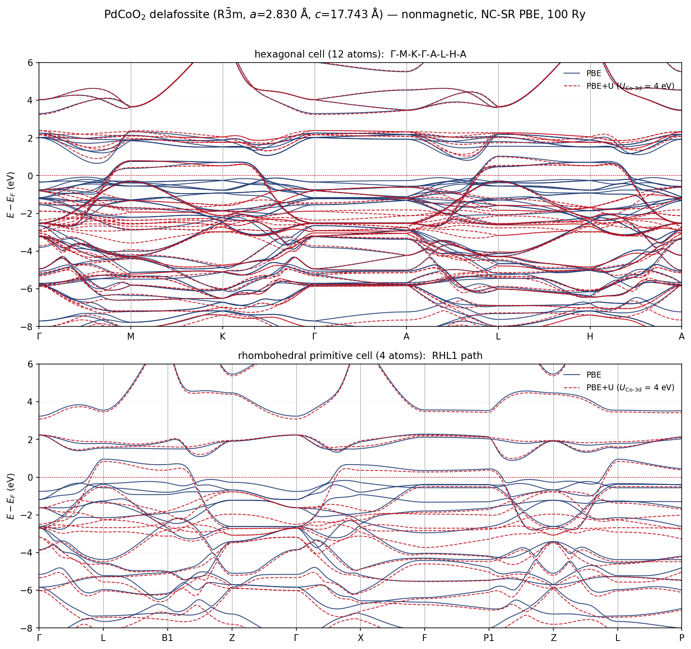
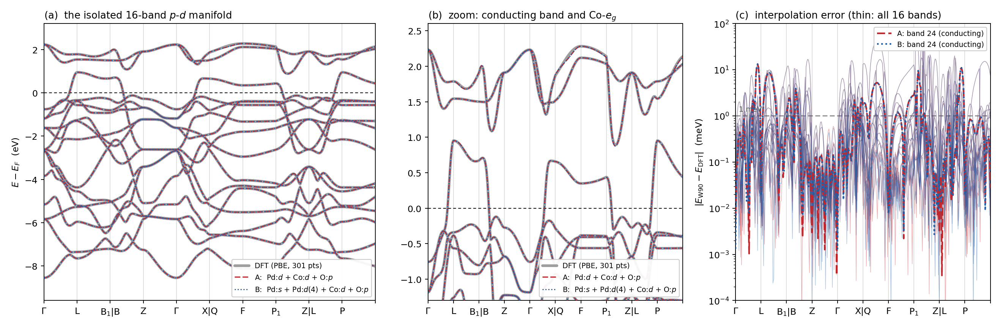

Contents
本页与本站其余内容(缺陷 $T$-矩阵下折叠)相互独立,是一次单独的能带计算。 输入与脚本在
~/edi_tmatrix/pdcoo2/,计算在 Anvil highmem 单节点完成。
1. 结构识别
给定的 POSCAR 是 R$\bar 3$m 菱方原胞(4 原子 = 1 化学式单位):
由 $a_{\rm hex}=|\mathbf a_1-\mathbf a_2|$、$c_{\rm hex}=|\mathbf a_1+\mathbf a_2+\mathbf a_3|$ 换算得
即 PdCoO$_2$ delafossite 的标准晶胞——那个以室温面内电阻率低于金属铜著称的准二维氧化物。 Pd 位于 3a、Co 位于 3b(CoO$_6$ 八面体,Co$^{3+}$ 低自旋 $d^6$,故非磁)、O 位于 6c($z=0.1112$)。
六方常规胞由菱方胞数值构造(不套用 Wyckoff 表):取 $\mathbf a_1-\mathbf a_2$、$\mathbf a_2-\mathbf a_3$、 $\mathbf a_1+\mathbf a_2+\mathbf a_3$ 为基,再用菱方平移填充并去重,得到 12 原子;结果自动落在 $(0,0,0)$、$(2/3,1/3,1/3)$、$(1/3,2/3,2/3)$ 的 R 心平移上 —— 构造正确性由结果自证。
2. 计算设置
| 项 | 取值 | 理由 |
|---|---|---|
| 赝势 | PseudoDojo NC-SR v0.5 PBE stringent(Pd 18e / Co 17e / O 6e) | 与本站其它计算同一套 |
| 截断 | ecutwfc = 100 Ry | Co-3d stringent 的建议量级 |
| 占据 | smearing,Marzari–Vanderbilt,degauss = 0.02 Ry | 金属 |
| 自旋 | nspin = 1 | Co$^{3+}$ 低自旋 $d^6$,实验与计算均非磁 |
| $+U$ | HUBBARD (ortho-atomic),$U_{\mathrm{Co}\text{-}3d}=4$ eV | 常用取值;与 PBE 逐点对比 |
| SCF $k$ 网格 | 菱方 $12^3$;六方 $16\times16\times3$ | 六方胞按 $c/a=6.27$ 各向异性配比 |
| 能带路径 | 六方 $\Gamma$-M-K-$\Gamma$-A-L-H-A(281 点);菱方 RHL1(301 点) | RHL1 参数由实际 $\alpha$ 现算:$\eta=0.8206$、$\nu=0.3397$ |
3. 能带

上:六方常规胞(12 原子);下:菱方原胞(4 原子)。蓝实线 PBE,红虚线 PBE+U,$E_F$ 对齐到零。
4. 三条读数
(i) 只有一条能带穿过费米面。 菱方原胞统计得 1 条;六方胞得 3 条 —— 正是同一条带在 3 倍胞里的折叠(自洽检验)。这条单一、宽、近自由电子的 Pd 带就是 PdCoO$_2$ 超高电导的来源, 费米面是简单的六边形柱面。
(ii) 准二维性一目了然。 $\Gamma\to$A(面间)方向该带几乎完全平,而 $\Gamma$-M-K-$\Gamma$ 面内色散达 $\sim 8$ eV —— 这就是面内/面间电阻率相差三个量级的能带解释。
(iii) $+U$ 的作用位置很干净,输运物理对它不敏感。
| 量 | PBE | PBE+U(4 eV) | 差 |
|---|---|---|---|
| $E_F$(六方) | 14.8272 eV | 14.8304 eV | 3 meV |
| 费米面附近的 Pd 带 | — | — | 几乎重合 |
| Co-3d 占据带($-1.5$ 至 $-4$ eV) | — | — | 整体压低 $\sim 1$ eV 并重排 |
原因是结构性的:费米面附近是 Pd-4d/5s 特性,而 $U$ 只作用在 Co-3d;且 Co$^{3+}$ 低自旋 $d^6$ 的 $t_{2g}$ 是满带(闭壳层),Hubbard 项对满带只给整体移动,不改变费米面附近的拓扑。 结论:算输运/费米面,PBE 足够;要定位 Co-3d 占据态(对比 XPS/XAS),才需要 $+U$。
5. 两道自检
| 检查 | 结果 |
|---|---|
| 两种胞的总能 / 化学式单位(PBE) | $-645.26000$(六方,$-1935.78001/3$) vs $-645.26077$(菱方) → 0.77 mRy = 10 meV |
| 同上($+U$) | $-645.10444$ vs $-645.10407$ → 0.37 mRy |
| 穿过 $E_F$ 的带数 | 菱方 1 ↔ 六方 3(3 f.u. 折叠)✓ |
两种胞来自完全独立的构造(菱方直接取自 POSCAR,六方由程序生成)、不同 $k$ 网格、 不同对称性识别,总能吻合到 10 meV/f.u.;$+U$ 时更收紧到 0.37 mRy —— 说明 Hubbard 投影 在两种胞里作用于同一组 Co-3d 轨道,$+U$ 的实现也自洽。
7. 该不该加 U:线性响应给出的答案
第 4 节的 $+U$ 用的是常见取值 4 eV。为了把"该不该加"从经验判断变成可引用的计算量, 我们用 DFPT 线性响应(QE 的 hp.x,Cococcioni–de Gironcoli 定义)把 U 算了出来:
| 量 | 值 |
|---|---|
| $U_{\mathrm{Co}\text{-}3d}$(线性响应) | 7.95 eV |
| 裸响应 $\chi_0^{\rm CoCo}$ | $-0.8022$ eV$^{-1}$ |
| 自洽响应 $\chi^{\rm CoCo}$ | $-0.1085$ eV$^{-1}$ |
| 屏蔽比 $\chi/\chi_0$ | 0.135 |
(ortho-atomic 投影,$n_q=2\times2\times2$,conv_thr_chi = 1e-6,虚拟超胞 8 格点; 21 分钟墙钟。)自洽响应只有裸响应的 13.5% —— Co-3d 的占据数在微扰下被强烈钉住, 这是一个货真价实的局域壳层,而且算出的 U 比常用的 4 eV 高一倍。
7a. 磁基态检验
"闭壳层"是本页全部论证的前提,所以它应当被证实而不是假定。自旋极化 SCF (nspin = 2,Co 初始磁矩 0.4)的结果:
| 量 | 值 |
|---|---|
| 总磁矩 / 绝对磁矩 | $0.00$ / $0.00$ $\mu_B$/cell |
| 自旋极化解总能 | $-645.26075840$ Ry |
| 非磁解总能 | $-645.26076524$ Ry |
| 差 | $7\times10^{-8}$ Ry $\approx 0.1$ μeV |
从有限磁矩出发,自洽精确塌回非磁解。低自旋 $d^6$ 的 $t_{2g}^6e_g^0$ 闭壳层确立。
7b. 综合判断:U 很大,但不该用在输运上
三条事实必须放在一起读:
- $U_{\rm Co}$ = 7.95 eV —— Co-3d 确实局域;
- 磁矩严格为 0 —— 关联壳层是闭合的,而 DFT+U 的 $\frac{U}{2}\mathrm{Tr}[\mathbf n(1-\mathbf n)]$ 对幂等占据矩阵恒为零,只剩下"占据态整体下移、空态上移"的刚性移动;
- $U$ = 4 eV 时 $E_F$ 只移 3 meV、费米面处的 Pd 带几乎不动(第 4 节)。
把 U 从 4 提到 7.95 eV,只会把 Co-3d 占据带再压低约一倍(~2 eV 而非 ~1 eV), 费米面附近依然不动。所以:
算输运、费米面、电子-声子:用纯 PBE。 要定位 Co-3d 占据态(XPS/XAS/RIXS 对比):用 $U=7.95$ eV —— 这个自洽算出的值,而不是猜的 4 eV。 需要更严谨时应考虑 U+V(
hp.x也能给 Co–O 的层间 V)或 HSE/GW。
未收敛项:上述 U 是 $n_q=2\times2\times2$ 的结果。HP 的 U 对 q 网格有收敛性, 若要引用应补一个 $3\times3\times3$ 的点(约 1 小时)。
一个实用陷阱(值得记下):
hp.x要求所有 Hubbard 原子排在ATOMIC_POSITIONS的最前面。 我们照 POSCAR 顺序写成 Pd-Co-O,hp_init因此受控退出;而真正的提示信息被 48 个 rank 的forrtl: severe (28)堆栈完全淹没,日志里 grep 不到。是堆栈本身(hp_init.f90:50 → > hp_stop_smoothly)指明这是受控退出而非崩溃,读源码那几行才找到原因。改成 Co-Pd-O 后一次通过。
9. Wannier 化:16 个 MLWF 复现整个 $p$-$d$ 流形
9a. 为什么是 16 个,而且不需要解缠
先看能带的流形结构(菱方原胞,301 点路径,相对 $E_F$):
| 能带 | 范围 (eV) | 归属 |
|---|---|---|
| 9–10 | $-20.8 \ldots -18.9$ | O-2s |
| 11–26 | $\mathbf{-8.55 \ldots +2.28}$ | O-2p(6) + Co-3d(5) + Pd-4d(5) = 16 |
| 24 | $-0.757 \ldots +0.952$ | 唯一穿过 $E_F$ 的传导带 |
| 27+ | $+3.23$ 起 | 自由电子式高带 |
band 10↔11 之间 10.3 eV、band 26↔27 之间 0.95 eV(均匀网格上复核为 17.16→18.11 eV)—— $p$-$d$ 流形完全孤立。于是取 num_bands = num_wann = 16、exclude_bands = 1-10, 27-40, 根本不需要 disentanglement,这是数值上最稳的一档。
轨道计数也自洽:16 条带 = 6+5+5,而 $E_F$ 上方那两条(25、26)正是 Co-$e_g$ —— Co$^{3+}$ 低自旋 $d^6$ 的空 $e_g$,与第 7 节的闭壳层结论相互印证。
9b. 两组投影:$\Omega_I$ 相同到 9 位
nscf 用 $8\times8\times8=512$ 个 $k$(nosym/noinv),纯 PBE(见第 7b 节)。 两个变体只有 Pd 的投影不同:
| 投影 | $\Omega_I$ | $\Omega_D$ | $\Omega_{OD}$ | $\Omega$ (Å$^2$) | |
|---|---|---|---|---|---|
| A | Pd:$d$(5) + Co:$d$(5) + O:$p$(6) | 12.433543233 | 0.00999622 | 0.62411529 | 13.067655 |
| B | Pd:$s$(1) + Pd:$d_{xy},d_{xz},d_{yz},d_{x^2-y^2}$(4) + Co:$d$(5) + O:$p$(6) | 12.433543233 | 0.00999573 | 0.62410262 | 13.067642 |
$\Omega_I$ 是规范不变量,两者相同到 9 位有效数字;总展宽差 $1.3\times10^{-5}$ Å$^2$。 这正是孤立流形应有的行为——投影只决定优化的起点,不决定终点。 把 Pd 的 $d_{z^2}$ 换成 $s$ 仍收敛到同一个全局极小,说明这个 MLWF 解不是某个局域极小的产物。
16 个 WF 平均展宽 0.817 Å$^2$、$\Omega_{OD}/\Omega=4.8\%$,中心精确落在原子位上、零漂移:
| WF | 中心 $z$ (Å) | 归属 | 展宽 (Å$^2$) |
|---|---|---|---|
| 1 | 0 | Pd $d_{z^2}$ | 1.528 |
| 2–5 | 0 | Pd $d_{xy},d_{xz},d_{yz},d_{x^2-y^2}$ | 0.755, 0.755, 0.948, 0.928 |
| 6–8 | 8.8715 $(=c/2)$ | Co $t_{2g}$ | 0.546, 0.540, 0.540 |
| 9–10 | 8.8715 | Co $e_g$ | 0.640, 0.640 |
| 11–13 | 1.98 $(=0.1112\,c)$ | O(1) $2p$ | 1.107, 0.758, 0.759 |
| 14–16 | 15.76 $(=0.8888\,c)$ | O(2) $2p$ | 1.107, 0.758, 0.759 |
两处未经设计、由数据自己给出的物理:
- Pd $d_{z^2}$ 的展宽 1.528 Å$^2$,是其余四个 Pd-$d$ 的两倍。它就是构成传导带的那个轨道—— 离域、与 Pd-5s 强杂化,所以最不局域。这是 PdCoO$_2$ 传导带 $s$-$d$ 杂化图像的一个直接量化印记。
- Co 的 5 个 $d$ 自动分成 3 + 2(0.54 三个、0.64 两个),正是八面体晶体场的 $t_{2g}$/$e_g$ 劈裂—— 而投影时并没有按对称性分开写。
9c. 与 DFT 能带逐点对比

对比方式本身需要说明:我们没有用 wannier90 自己输出的 *_band.dat。它的路径取点与 DFT 能带计算的 301 个点不一定重合,把两者对齐所引入的插值误差与待测量同量级。 改为直接读 <seed>_hr.dat、在DFT 的那 301 个 $k$ 点上自建 $H(\mathbf k)=\sum_{\mathbf R}e^{2\pi i\mathbf k\cdot\mathbf R}H(\mathbf R)/\deg(\mathbf R)$ (551 个 Wigner–Seitz $\mathbf R$)再对角化,逐点严格可比。
| 全 16 带 RMS | $|E-E_F|<1$ eV 的 RMS | 最大偏差 | 传导带(24)RMS | 传导带最大 | |
|---|---|---|---|---|---|
| A | 3.574 meV | 2.825 meV | 59.15 meV | 2.726 meV | 13.31 meV |
| B | 3.574 meV | 2.825 meV | 59.15 meV | 2.724 meV | 13.31 meV |
$8^3$ 网格下,整个 16 带流形的插值误差 RMS 3.6 meV、费米面附近 2.8 meV, 传导带 2.7 meV(最大 13 meV)。图 (c) 中细线是全部 16 条带的逐点误差, 绝大部分在 1 meV 以下;偏差集中在能带交叉附近,加密 $k$ 网格即可继续压低。
一个附带的自洽检验:本次重跑的 scf 给出 $E_F=14.8809$ eV,与第 3 节那次独立计算完全相同。
9d. 两条方法论教训
(i) 能带极值必须在均匀网格上量,不能在高对称路径上量。 我们也试过只保留传导带的单带($\text{num\_wann}=1$)模型,冻结窗按路径上读到的 "band 23 顶 $=-0.175$、band 25 底 $=+0.891$" 来设,结果 wannier90 在第 165 个 $k$ 点报 "冻结窗内有 2 条带而目标只有 1 条"。查 512 点均匀网格的真值:band 25 的真实最低点是 $+0.803$ eV,比路径上读到的低 88 meV——它根本不落在任何高对称线上。 高对称路径是 BZ 里的零测集,用它读极值在原理上就不成立。 (单带模型随后按需求取消,不在本页结论内;但这条教训保留。)
(ii) 窗口要锚在能带的绝对位置上,不能锚在 $E_F$ 上。 $8^3$ nscf 的 $E_F=14.8310$ eV,比 $12^3$ scf 的 14.8809 低 50 meV(网格与展宽差异)。 把解缠窗写成 "$E_F\pm$" 会随之整体漂移 50 meV,而窗口的全部意义在于把某条带单独框住, 边距只有几十 meV。约束必须锚在它要复现的不变量上——这里是能带的相对位置,不是费米能。
10. 成本与可复现
四个 SCF + 四个能带计算(两种胞 × PBE/+U)在 Anvil highmem 单节点上合计不到 6 分钟 (六方 SCF 80 s、菱方 SCF 45 s,能带各 30–90 s)。输入卡、SLURM 脚本与出图脚本在 ~/edi_tmatrix/pdcoo2/;计算目录 /anvil/scratch/x-rg47749/pdcoo2h(六方)与 .../pdcoo2r(菱方)。
线性响应 U 的计算在 /anvil/scratch/x-rg47749/pdcoo2u(hp_scf.in / hp.in / mag_scf.in, 输出 pdcoo2u.Hubbard_parameters.dat)。
Wannier 化在 /anvil/scratch/x-rg47749/pdw90(输入与 SLURM 脚本同步在 ~/edi_tmatrix/pdcoo2/w90/): scf 44 s + nscf(512 $k$)52 s + 每个变体约 3 分钟(pw2wannier90.x 占大头), 单节点 48 rank × 2 线程。对比出图脚本 w90bands.py。
提交头必须写全:
--ntasks=48 --cpus-per-task=2 --exclusive缺一不可。 只写-n 48时 48 核上跑 96 线程、节点又被共享,scf 从 2.1 s/迭代变成 50 s/迭代, 而日志里毫无异常。唯一的发现途径是拿已知good作业的PWSCF ... WALL做对照。
可继续的方向:用这套 16 带 MLWF 做费米面(六边形柱面的直接可视化)与输运; 加密 $k$ 网格把插值误差压到亚 meV;投影态密度(定量验证"费米面是 Pd 的"); $n_q=3\times3\times3$ 的 U 收敛点;或加入自旋轨道耦合。